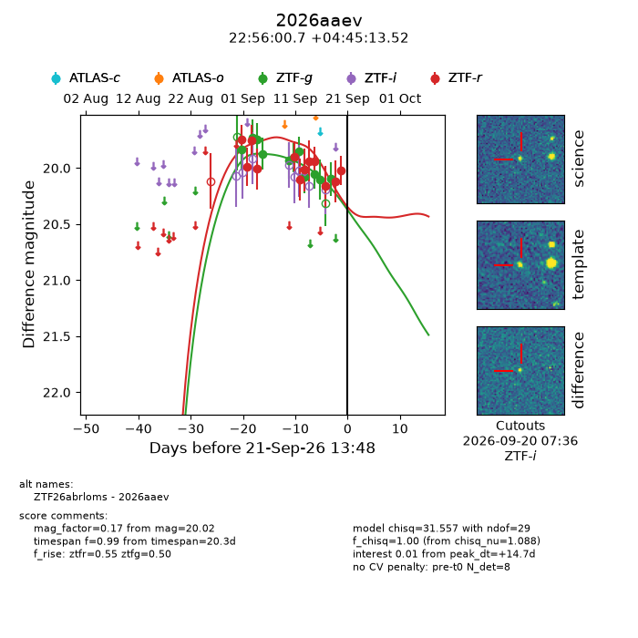
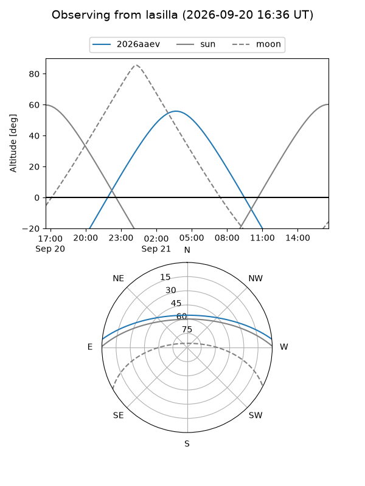
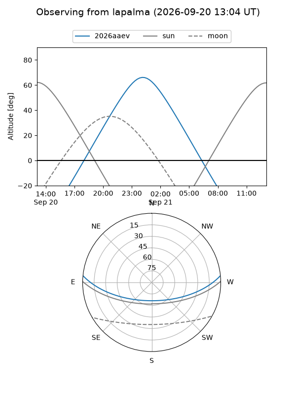
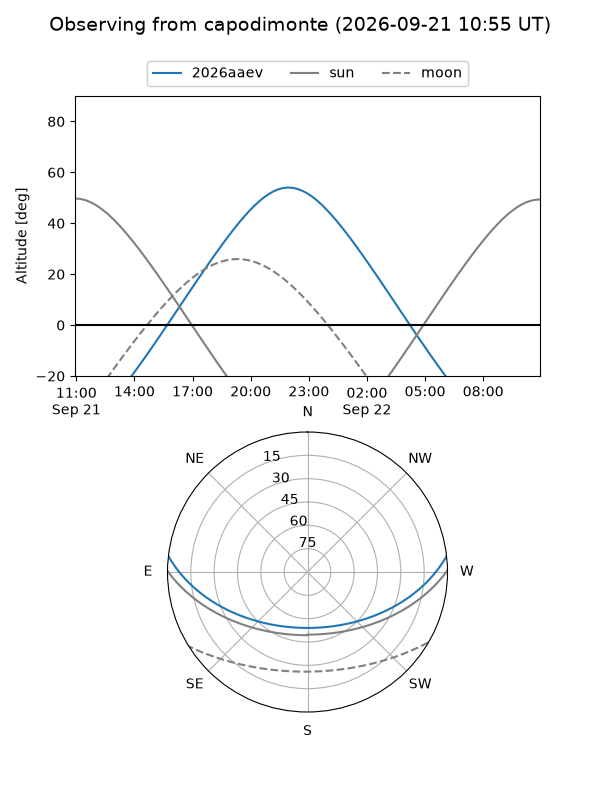
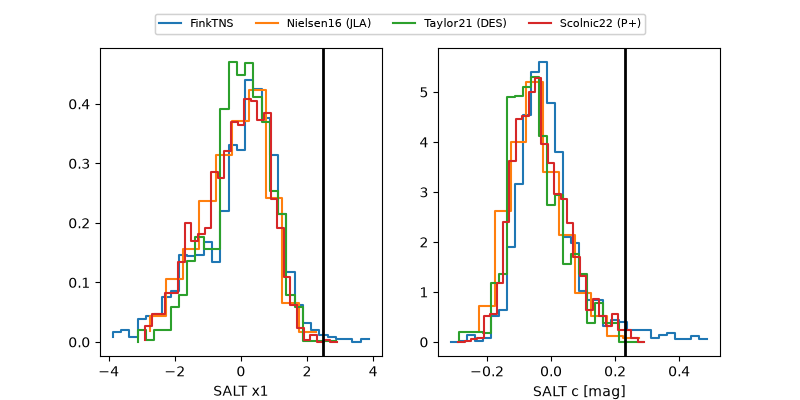

2026aaev
Target 2026aaev at 2026-09-21 13:50
Aliases and brokers:
FINK-ZTF: ztf.fink-portal.org/ZTF26abrloms
Lasair-ZTF: lasair-ztf.lsst.ac.uk/objects/ZTF26abrloms
ALeRCE-ZTF: alerce.online/object/ZTF26abrloms
YSE-PZ: ziggy.ucolick.org/yse/transient_detail/2026aaev
TNS name: wis-tns.org/object/2026aaev
Direct TNS query: direct search
alt names
ZTF26abrloms (ztf,fink_ztf)
2026aaev (tns,yse)
Coordinates:
equatorial (ra, dec) = 344.0031,+4.75376
equatorial (HMS+DMS) = 22:56:00.73,+04:45:13.52
galactic (l, b) = (77.3782,-47.64712)
Flags:
TNS type: nan
peak dt: +14.7
Photometry:
last ztfg=20.10, ztfr=20.02
11 ztfg, 12 ztfr detections
Lightcurve

Visibility



Additional plots
